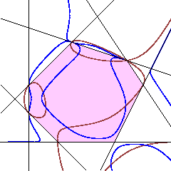

Numerical Real Algebraic Geometry
22-28 November 2009 |

|  |
Frank Sottile
Texas A&M University
Numerical homotopy continuation gives efficient
and naturally parallel algorithms to find all complex
solutions to a system of polynomial equations. The
real solutions are obtained by sifting the complex
solutions, selecting those with small imaginary part.
In contrast, the Khovanskii-Rolle algorithm is a different numerical continuation algorithm that only follows real solutions and is naturally parallel. This new continuation algorithm is based on the proof of the current best bounds for the number of real solutions to a system of sparse polynomial equations, including the gale dual transformation of polynomial systems.
These lectures will discuss numerical homotopy continuation, Gale duality, the new fewnomial bounds, and then present the Khovanskii-Roll continuation algorithm. Augmenting the lectures will be computer exercises, challenges, and open problems.
More information on Khovanskii-Rolle Continuation is found here.
Outline:
| Lecture I: | Bézout and Bernstein Theorems. Some Exercises. |
| Lecture II: | Numerical Homotopy Continuation |
| Lecture III: | Fewnomial Bounds and Gale Duality |
| Lecture IV: | Khovanskii-Rolle Continuation |
Further reading:
| [BBS] | Daniel J. Bates, Frédéric Bihan, and F. Sottile, Bounds on the number of real solutions to polynomial equations, IMRN, 2007, 2007:rnm114-7. Open version. | |
| [BaS] |
Daniel J. Bates and F. Sottile,
|
|
| [BiS] | Frédéric Bihan and F. Sottile, Gale duality for complete intersection, Annales de l'Institut Fourier, Tome 58 (2008) fasicule 3, pp. 877--891. Open version. | |
| [K] |
Askold Khovanskii (translated by Smilka Zdavkovska),
Fewnomials,
|
|
| [SW] |
Andrew Sommese and Charles W. Wampler,
The numerical solution of systems of polynomials,
|
|
| [S] | F. Sottile, Real Solutions to Equations from Geometry, In preparation. | |
| [St] |
B. Sturmfels,
Solving Systems of Polynomial Equations,
CBMS 97 |
Last modified: Sun Nov 22 21:40:53 CET 2009